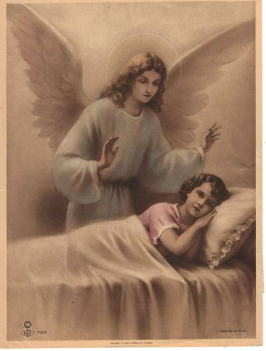

Our Endearing Guardian Angels,
Our Constant Prayer Companions
Inspirations from the Holy Guardian Angels
|

|
October 2 2020 Feast of the Guardian Angels
Jesus is asking me to begin a journal daily with my Guardian Angel.
First, I expressed deep sorrow for not being aware of him through the years.
“Now more than ever will I need to be a part of your life! Remember all that I share or speak comes from GOD—as Father, Son or Holy Spirit. It would be good if each day you knelt by your bed, praising and thanking GOD for your life, giving Him your day—praying for all of your families’ needs, entrusting all of the world to GOD, pleading the Precious Blood of Jesus over all and sealing all in GOD’s love and mercy.
For one day, you will kneel before GOD.
Remember the present moment is all that you have to offer to GOD each day—in it contains grace and salvation for you and others!
Remember, too, how very loved you are and precious to GOD. He has created you for Himself to be Him in the world.
Remember, too, that you are never alone. I am always at your side and you have your relatives and the Heavenly Court praying for you and also invite the Souls in Purgatory to pray for the world’s families and you!
Thank you for spending this time with me. I look forward to our days together! There is nothing that we cannot do together for GOD’s glory and triumphant victory!
When you think that you are waiting too long—know that I am with you! I am always with you!
GOD is asking you, through me, to ‘wake up’ others to know and to converse with their own Guardian Angel.
It will take a little spiritual adjustment, but encourage them to begin.
We have been given through GOD’s authority and sovereignty of life to share with each one. You are loved beyond measure as we were created from His Love; we bring and manifest His merciful love to you.
The simple prayer that you learned as a child:
‘Angel of GOD
my guardian dear,
To whom GOD’s Love
commits me here,
Ever this day
be at my side
To light, to guard
to rule and guide. Amen.'
is just the beginning of who we are and what we do!
Now is the time to increase your relationship with us-Guarding Angels. For a mentor, St. Joseph will help you. As you have been told, these are his times to further give glory and praise to GOD and to help in building GOD’s Kingdom.
Encourage others today about the importance of one’s Guardian Angel.
GOD’s children will delight and grow with their wonderful gift of knowing, trusting and following their Guardian Angels.
I am always with you to help you in any way. It’s so important to Praise and pray.
Help others to not overlook this great gift of GOD-Guardian Angels.”
Clarification
I shared with my Guardian Angel that I was confused about to whom I should be talking.
“Prayers are addressed to the Blessed Trinity; Saints intercede with other loved ones.
For conversing: it’s always GOD’s message. The message comes through different messengers—JESUS, the HOLY SPIRIT, Our Blessed Mother, Saint Joseph or others.”
October 3, 2020—the actual death day of St. Francis
My Dearest Guardian Angel, thank you for this time with you.
“Heaven waits for all of her children to respond to their Guardian Angels. Pray in a special way today with St. Francis and all the Franciscans for the renewal of faith.
Among our Children of all ages, we are beings of Light—so wherever we are, we bring Heaven’s light.
Our presence reminds you of GOD’s eternal love and inheritance. Your Heavenly Home reveals the Majestic Kingdom of GOD—spectacular beyond words. All here (on earth ) pales to the Glory of GOD!
Today let us shine our light and share GOD’s Peace with all those to whom we are sent.
Thank you for your dedication to making more souls aware of GOD’s Eternal Love through us, His Angels!
Peace!”
October 4, 2020 Feast of Saint Francis
“My Dear Child, thank you for spending time with Jesus in Church. I am always bringing the Light and Love of Heaven. If people could just understand that when they turn to us, Guardian Angels, Heaven opens before them.
The Oneness and Peace of Heaven is offered in each present moment, and as I stated yesterday, our message is one with GOD’s! No one can comprehend on your side the graces, presence and peace of Heaven offered in each present moment. This is your ‘assignment’ today—practice living in the present moment, embracing and receiving GOD’s Love and Mercy, Peace and Healing and Wholeness!
Go with GOD’s Peace!
Remember you are His temple, where He resides—You are His Holy Monstrance!
Pax!
P.A.X.
P.ray A.lways. ….. X. ….. I kiss your forehead.”
October 5, 2020 Feast of Saint Faustina
Collect of the day: “Pour out your Mercy upon us.”
St. Faustina, pray for us!
Praise Be Jesus—now and forever!
“My Dear Child, thank you for your words to others, encouraging them to seek and learn of their own Guardian Angels.
Today (we) live ‘mercy’ in each present moment—through these moments love and peace will be infused into the world, countering fear, darkness and loneliness! We as Angels can only wait—we pray and wait for each person to acknowledge our presence, GOD’s Presence among His Children.
Encourage others to be patient as they learn ‘to be’ with their Guardian Angels.
Each angel delights in their chosen Child and brings this joy into the Spiritual world as well as to each other/the earth.
There is never too little of a prayer that we are not able to bring before the Merciful Throne of GOD!
In these days, many of GOD’s Children are ‘waking up’—encourage patience as life’s pilgrimage is moment by moment.
Remind them, too, they are never, ever alone.
If you could only see how close we always are, each would cry for joy in thanksgiving to GOD
Be thankful to GOD and give Him Praise! PAX”
October 6, 2020—Saint Bruno
My Dear Guardian Angel, thank you for your patience over these many, many years.
I thank GOD for you and your helping me now, especially to help others to know the importance of their Guardian Angel.
“You are welcome!
Today I desire for you to just rest in the eternal Present Moment. Here, Heaven holds and embraces you. Sometimes I am with you to remind you over and over again that you are never alone. By calling on Jesus or me, your Guardian Angel, you are immediately brought into the Light of Heaven. The demons draw you into the darkness, causing you fear, confusion and anxiety.
You call-your prayer to us is all that is necessary for us to be even more present to you than you can realize or imagine.
As you draw closer to the hearts of Jesus and Mary and St. Joseph, we are like their ‘honor guard’ so you are being drawn closer to us as to better understand our role in your lives.
For now, just rest in this Eternal Love of GOD-as you rest and Heaven draws you into this mystical moment, so too, is all of creation being drawn. PAX!”
October 7, 2020 Our Lady of the Rosary
Dearest Guardian of my soul, it is evening and the day is almost over.
“Thank you for coming to this chapel. It would be good that when you return you write a little note. PAX!”
October 8, 2020
Thank you for helping me tonight!
“Team work-remember how Jesus sent the disciples in two’s?
Well, you and I are two and when two or more are gathered in Jesus’ name, He is in our midst!
So, it’s important to be one mind and one heart-JESUS changes everything!
Rest now-more tomorrow. PAX!”
Pray Always X
Presence Assured X
Pretty Amazing X
October 9, 2020
Dearest Guardian Angel,
Thank you for bringing me safely through the night, giving me a wonderful ‘rest’.
“Today is Friday-let’s make it a penitential day. We offer the entire day—all it’s present moments to the Most Blessed Trinity. Continue to keep your ‘eyes’- on JESUS! As we each behold GOD, we share ‘His’ loving gaze upon each of His Beloved! Always He is loving, forgiving and sharing His Mercy so that you can share all with others.
As GOD is generous, so shall His Children be-especially in Love. Smile often-remember how our Blessed Mother smiled at St. Therese when she was so sick? Smiles bring GOD’s ‘Sonshine’-be as ‘Son’ flowers always facing and turning to Him! Remember to share His Love and your ‘Belovedness’ with all you meet! PAX!”
October 10, 2020 Beatification of Carlo Acutis
Dearest Guardian Angel,
Today the Church raises to the altar my Dear Eucharistic Companion, Carlo.
”Yes, Heaven celebrates Our New Blessed. He is a Light for all young people.
Continue to encourage Adoration, in person or on-line!
Remember to tell others to unite with their Guardian Angel as one mind and one heart.
Graces are recognized when we are united. Encourage others that being one with their Guardian Angel will take a little time-like any good and holy relationship. One gift which we bring is GOD’s Peace!
Remember the devil can come as an angel of light, can imitate His voice, but can never imitate His Presence.
Continue to teach others about the present moment.
It’s time to rest. PAX!”
October 11, 2020, Sunday
My Dearest Guardian Angel,
Good morning, my most wonderful prayer companion.
“GOD’s Blessings. This is how I greet you each day in the silence of your heart!
So, you see, we are united and have been in all of this time, especially when you are in the ministry of writing, greeting, and sharing.
Today I asked GOD to reveal to you the very importance of Eucharistic Adoration. Thus the ‘Son’ in the midst of the fog. This is the focus of our mission-to draw all the hearts to Our Beloved Jesus. PAX!”
October 12,2020 Feast of Blessed Carlo Acutis
My Dear Angel, it is the end of the day. Thank you for leading me and guiding me, changing schedules so that I could pray with ___ on the feast day of Blessed Carlo Acutis.
“You are Welcome!
Thanks for encouraging so many today about the importance of one’s Guardian Angel.
Continue to unite yourself with me and thus having JESUS in our midst-this is also a part of the Focolare charism.
Yes, Carlo has been helping you to spread Good News. It’s time to rest-I’ll be watching over you in the night! PAX!”
October 13, 2020 Feast of Our Lady of Fatima
“My Beloved Child, thank you for your loving kindness, sharing GOD’s Love and Mercy.
Never tire of revealing GOD’s Love—His Belovedness!
Speak often of GOD’s Love of His Children-
Each is Beloved.
JESUS has come from Heaven to reveal GOD’s unconditional, Sacrificial Love for each of His Children.
Even in sending His Son. Many do not understand this great gift of Love.
Rest now! PAX!”
October 14, 2020, (Wednesday) St. Callistus
My dear Guardian Angel, Good Morning!
“GOD’s Blessings be with us today!
Smile more and think of GOD gazing upon you as we, with JESUS, live this day!
Let us begin by uniting your heart with JESUS’ heart and Our Blessed Mother’s heart and the chaste heart of St. Joseph. Let us see ourselves ‘present’ to the Holy Family today.
Let each of them enter into your day as if on pilgrimage-also their Guardian Angel will be present also!
As you ‘see’, one is never alone! Isolation and division are always ploys and tricks of the devil.
Today also let us pray for all men-young and old, and entrust them into the care of St. Joseph.
Let us also lift up every little one in their mother’s womb, praying for conversion of hearts to Life and an end to abortion!
Continue to praise GOD throughout the day!
Today we are on a caravan of faith, love and peace! PAX!”
(From the dictionary, Caravan: traders, pilgrims traveling together in the desert).
October 15, 2020 (in Adoration at St Joseph Church)
My dearest Guardian Angel, GOD morning!
“You as well.”
Here before Our Eucharistic King, one enters into the Royal, Eternal Kingdom. Here each has a ‘taste’ of Heaven—Peace. Peace. Peace!
As we unite ourselves, let us be assured of the graces and blessings that come in this unity.
Remember, I was created, as you, from His Eternal, Infinite Love. You are finite now, created for infinity-eternity.
Yes, speak about ‘Companions of Blessed Carlo.’
Pray today and offer sacrifices for the Youth and Young People.
Yes, today let’s transfer our conversations to your Journal.
Thank you for encouraging others.
Barnabas and Paul journey with you during these days.
Your Heavenly Family intercede for you and our earthly family-all the families in the world.
Remember, do not let the distractions of the world deter you from your mission of loving!
Remember those who love you and are praying for you! PAX!”
October 16, 2020, Feast of St. Margaret Mary Alacoque
My Dearest Guardian Angel,
Thanks for being with me today and all the ways that I have felt your Presence and nudging.
“You are welcome! I so delight in your name, ‘one who praises!’ I whisper your name. Most often you do not hear me! We have so much to praise and thank GOD for! Later-sit outside and together let us thank and praise.
You are an encourager and I give you the motivation when you are tired and weary.
Lean on me. JESUS and I together is a wall of Light, Grace and Peace. Forge your heart-as one with JESUS—listen to the Saints, who will also encourage you!
Talk to you soon! PAX!”
October 17, 2020
“Thanks for sharing our times together with others.
More tomorrow! PAX!”
October 18, 2020—Sunday
Dearest Guardian Angel, thank you for your presence yesterday during the day and on the way for the ‘Morning of Hope’. Thanks for readying the others’ Guardian Angels to help the participants to be open to GOD’s Presence and message.
I thank JESUS and the HOLY SPIRIT for directing this special time with His Chosen Ones!
Especially, I thank Him for the gifts received with praying with others and the focus of the talks.
“Yes, prayer always changes things. There are so many searching for peace and truth—JESUS!
Continue to pray for the Young People and their families.
Today, let us be aware of GOD’s Love as we journey this Sunday.
Heaven rejoices; listen and join in the worship, giving honor and glory to GOD!
Encourage others to take time ‘to be’ with their Guardian Angel.
Take Sundays as a time ‘to just be’—slow down & recognize GOD’s Presence and gifts!
Reflect GOD’s Love— PAX!”
Guardian Angels - Our God-Given Bodyguards